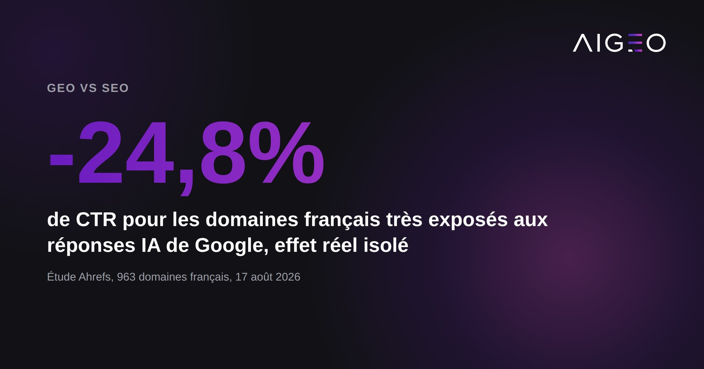
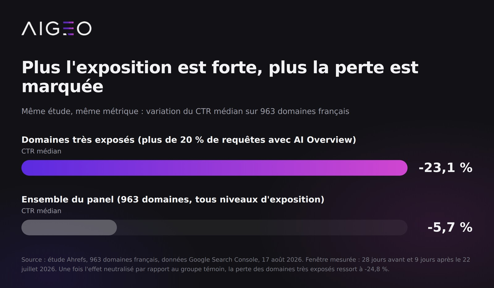

Une étude Ahrefs publiée le 17 août 2026 sur 963 domaines français chiffre ce que beaucoup de marques soupçonnaient sans preuve : depuis le déploiement des AI Overviews de Google en France le 22 juillet 2026, être bien classé rapporte déjà moins de clics, jusqu'à -24,8 % pour les sites les plus exposés. Voici ce que dit précisément cette étude, ce qu'une étude distincte observe sur l'avantage à être cité, et ce que ça change pour une stratégie de contenu.

Le SEO ne fonctionne-t-il vraiment plus ?
Il fonctionne toujours, mais il rapporte moins sur les requêtes où Google répond directement. Selon l'étude Ahrefs (17 août 2026, données Google Search Console agrégées sur les 1 000 domaines générant le plus de clics en France entre avril et juillet 2026, dont 963 retenus), les domaines très exposés, ceux dont plus de 20 % des requêtes déclenchent un AI Overview, perdent 23,1 % de taux de clic (CTR) en médiane. Une fois l'effet neutralisé par rapport à un groupe témoin peu exposé, moins de 2 % de requêtes concernées, l'effet réel ressort à -24,8 %.
La fenêtre mesurée est courte et il faut le dire : 28 jours avant le 22 juillet 2026, puis 9 jours après. Ce n'est pas une tendance de fond établie sur un an, c'est un choc mesuré juste après le déploiement.
Ce n'est pas un phénomène marginal ni uniforme. 82,2 % des domaines très exposés du panel perdent du CTR, mais l'ampleur dépend directement du niveau d'exposition : sur l'ensemble des 963 domaines, exposition mêlée, la médiane est plus modérée, -5,7 % de CTR et -8,8 % de clics. Pour les sites en .fr, la perte médiane de clics est de 12,3 %. Le secteur santé, le plus exposé de l'étude avec un taux d'AI Overview de 22,2 %, encaisse -20,4 % de CTR à lui seul. Ahrefs résume la mécanique par une règle simple, tout en précisant qu'une pente n'est pas une prédiction : chaque point de taux d'AI Overview supplémentaire coûte environ un point de CTR.

Le SEO classique, être bien positionné sur une requête, continue donc de fonctionner, mais sur un volume de clics disponibles qui rétrécit à mesure que Google répond directement dans la page de résultats.
Qu'est-ce que le GEO change concrètement par rapport au SEO ?
Le SEO optimise pour être classé. Le GEO, pour Generative Engine Optimization, optimise pour être cité, c'est-à-dire mentionné, nommé ou repris dans une réponse générée par une IA, avec ou sans clic derrière.
L'étude Ahrefs ne mesure pas l'avantage d'être cité par rapport à ne pas l'être, ce n'est pas son objet : elle segmente par taux d'exposition aux AI Overviews, jamais par présence de la marque dans la réponse. Sur ce point précis, une étude distincte de l'agence américaine Seer Interactive, publiée le 4 novembre 2025 et portant sur 3 119 termes de recherche, 42 organisations clientes et 25,1 millions d'impressions organiques suivies de juin 2024 à septembre 2025, observe sur son propre panel un CTR organique 35 % plus élevé pour les marques citées dans un AI Overview que pour celles qui ne le sont pas, soit 0,70 % contre 0,52 %.
Trois réserves, que Seer pose elle-même. La première : le périmètre est restreint aux requêtes informationnelles et éducatives, les plus exposées aux AI Overviews, ce n'est pas un panel généraliste. La deuxième : l'étude ne déclare aucun périmètre géographique, ce sont les données clients d'une agence américaine et rien n'y concerne la France. La troisième, la plus importante : Seer écrit noir sur blanc ne pas pouvoir prouver que la citation cause le meilleur CTR, il est tout aussi possible que les marques déjà fortes soient simplement plus souvent citées. C'est une corrélation, pas un levier démontré. Et les deux CTR sont en baisse sur un an, 0,70 % comme 0,52 % : l'avantage de la citation est un ralentissement de la chute, pas un gain.
Ce que les deux études suggèrent, chacune à sa manière : la perte de clics n'est pas répartie également entre tous les sites bien classés.
Ce que ça signifie pour une stratégie de contenu B2B
Concrètement, un contenu pensé pour le SEO seul optimise un titre, une meta-description et une densité de mots-clés pour grimper dans dix liens bleus. Un contenu pensé pour le GEO structure la réponse elle-même : une question posée en langage naturel, une réponse directe et vérifiable dans les deux premières lignes, des faits datés et sourcés qu'une IA peut reprendre sans reformuler de travers. C'est un changement de forme autant que de fond, et rien dans les études citées ici ne garantit qu'une structuration suffit à elle seule à obtenir la citation.
Faut-il abandonner le SEO pour tout miser sur le GEO ?
Non, et l'étude Ahrefs ne le suggère pas. Le SEO reste le canal qui amène le trafic sur les requêtes où aucun AI Overview ne se déclenche encore. La bonne lecture n'est pas « SEO contre GEO », mais deux effets qui se cumulent sur la même page : rester visible pour les requêtes encore dominées par les liens classiques, tout en structurant le contenu pour être repris quand Google, ou une autre IA, répond à la place des liens bleus.
Ce qui ne fonctionne plus, c'est de traiter le SEO comme suffisant en soi sur les requêtes déjà touchées par les AI Overviews. Une page qui grimpe en première position mais n'est jamais citée dans la réponse laisse une partie du trafic disponible à des concurrents mieux positionnés dans le texte généré.
Ce qu'il faut retenir
- -23,1 % de CTR médian pour les domaines français très exposés aux AI Overviews de Google, plus de 20 % de leurs requêtes concernées, et -24,8 % une fois l'effet isolé du groupe témoin (Ahrefs, 963 domaines, 17 août 2026, fenêtre de 9 jours après le 22 juillet).
- Médiane sur l'ensemble du panel : -5,7 % de CTR et -8,8 % de clics. L'ampleur de la perte suit le niveau d'exposition, elle n'est pas uniforme.
- -12,3 % de clics en médiane pour les sites en
.fr. Secteur santé, le plus exposé avec 22,2 % de taux d'AI Overview, à -20,4 % de CTR. - Sur un panel distinct (Seer Interactive, 4 novembre 2025, requêtes informationnelles, périmètre géographique non déclaré), les marques citées dans un AI Overview affichent un CTR organique 35 % plus élevé que les non citées. Corrélation constatée, causalité non établie par les auteurs. À ne pas additionner avec les chiffres Ahrefs.
- Règle Ahrefs : chaque point de taux d'AI Overview supplémentaire coûte environ un point de CTR. Les auteurs précisent qu'une pente n'est pas une prédiction.
FAQ
Non, selon les données disponibles à ce jour. Les deux études citées ici montrent des effets qui se cumulent, pas qui se substituent. Les requêtes sans AI Overview continuent de dépendre du SEO classique.
L'exposition varie fortement par secteur : la santé affiche un taux d'AI Overview de 22,2 % dans le panel Ahrefs, avec une baisse de CTR associée de 20,4 %. Un diagnostic sectoriel reste nécessaire avant de prioriser les efforts.
Aucune des deux études citées ne le mesure. Ce qui est documenté, c'est un écart de CTR organique entre marques citées et non citées sur le panel Seer Interactive, 35 % en plus, que les auteurs présentent eux-mêmes comme une corrélation et non comme un effet prouvé de la citation.
Et votre marque, elle sort ou pas ?
Nous posons deux questions d'acheteur de votre catégorie à une IA, sans jamais nommer votre marque, et nous vous montrons le résultat avec les captures datées.